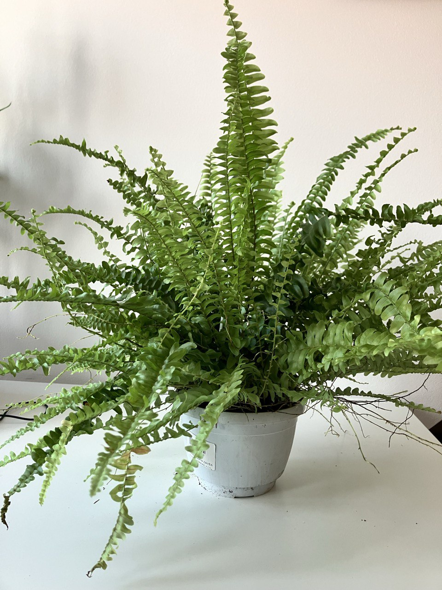

Activity
- Scheduled
- Feed 03.09.2024
- Repot 03.08.2025
Nephrolepis Plant Care Guide
Light
- Indirect Sunlight: Nephrolepis (Boston Fern) thrives in bright, indirect light. Direct sunlight can cause leaf burn, so it’s best to place it in a spot with filtered light.
Watering
- Consistent Moisture: Keep the soil consistently moist but not waterlogged. Water the plant thoroughly when the top inch of soil feels dry to the touch.
- Humidity: Nephrolepis loves high humidity. Mist the plant regularly, or place it near a humidifier. Alternatively, place the pot on a tray filled with pebbles and water to increase humidity around the plant.
Soil
- Well-Draining Soil: Use a peat-based potting mix with good drainage. A mixture of peat, perlite, and pine bark is ideal for Nephrolepis.
Temperature
- Moderate Temperatures: Nephrolepis prefers temperatures between 60-75°F (16-24°C). Protect the plant from cold drafts and temperatures below 55°F (13°C).
Feeding
- Monthly Fertilization: Feed the plant with a balanced liquid fertilizer diluted to half strength once a month during the growing season (spring and summer).
Potting
- Container Choice: Choose a pot with drainage holes to prevent waterlogging. Nephrolepis can be grown in hanging baskets to allow its fronds to cascade beautifully.
- Repotting: Repot every 1-2 years or when the plant becomes root-bound. Choose a slightly larger pot and refresh the soil during repotting.
Pests and Problems
- Common Pests: Watch for pests such as spider mites, mealybugs, and scale. Treat infestations promptly with insecticidal soap or neem oil.
- Leaf Care: Trim off any brown or yellow fronds to encourage new growth and maintain the plant’s appearance.
Additional Tips
- Air Circulation: Ensure good air circulation around the plant to prevent fungal issues. Avoid placing it in overly crowded or stagnant areas.
- Non-Toxic: Nephrolepis is non-toxic to pets, making it a great choice for households with animals.